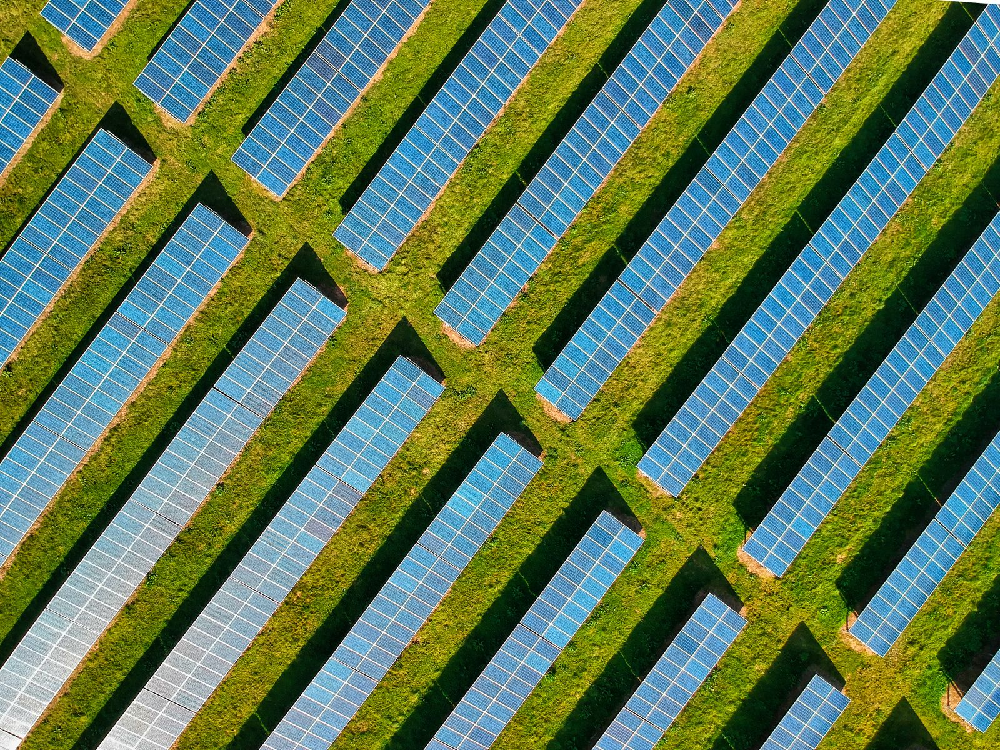
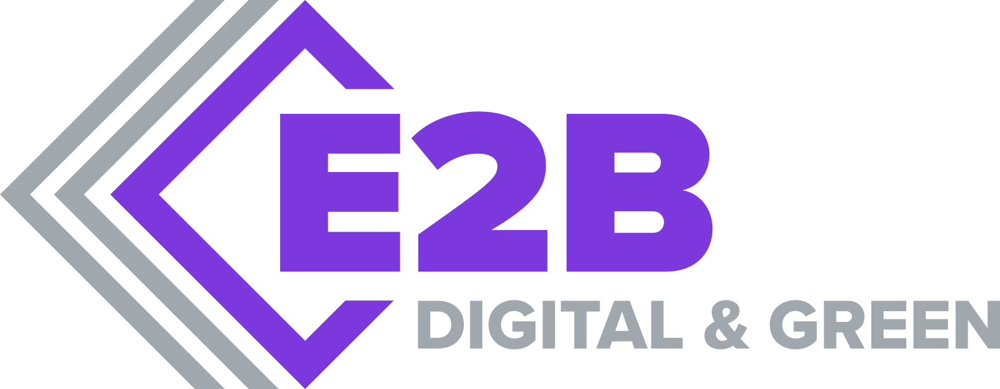

Green TransformationCostruire
Costruire
la nuova energia.
Infrastrutture per produrre, accumulare e trasformare l’energia. Tecnologie diverse, progettate per dialogare.
Esplora gli ambiti
Infrastrutture energetiche e digitali,
dalla progettazione alla conduzione.
Produrre energia è una parte della sfida.
Integrare le infrastrutture è il passo successivo.
E2B mette in relazione infrastrutture energetiche e digitali. Unisce progettazione, costruzione e conduzione, collegando produzione rinnovabile, sistemi di accumulo e fabbisogni dei siti.
Lavoriamo sul punto di incontro fra energia e digitale: dalle connessioni elettriche ai sistemi energetici a supporto dei data center, con responsabilità definite per ogni progetto.
Produzione rinnovabile e accumulo, dimensionati sui fabbisogni del sito.
Connessioni elettriche e sistemi impiantistici che rendono disponibile l’energia.
Data center da alimentare: capacità, continuità e condizioni di esercizio guidano il progetto.
Un unico progetto, dalla fonte energetica all’infrastruttura che la utilizza.
Progettiamo, costruiamo e conduciamo infrastrutture fotovoltaiche, mettendo in relazione produzione elettrica, connessioni e fabbisogni del sito. Il fotovoltaico diventa parte di un sistema che può integrare accumulo e diverse utenze energetiche.
La progettazione considera le caratteristiche dell’area, l’integrazione impiantistica e le esigenze di esercizio. Configurazione, dimensionamento e modalità di collegamento si definiscono sul singolo progetto.
Produzione fotovoltaica, accumulo e utilizzi finali: tre elementi da progettare insieme.

Infrastrutture per produrre, accumulare e trasformare l’energia. Tecnologie diverse, progettate per dialogare.
Esplora gli ambitiSistemi energetici per data center: produzione, accumulo, connessioni elettriche e condizioni di esercizio, coordinati con le esigenze del sito.
Esplora l’integrazionePartiamo dai fabbisogni del sito e dagli obiettivi del progetto. L’ingegneria confronta le configurazioni possibili, dimensiona i componenti e definisce le interfacce fra produzione, accumulo, rete e utenze. Le scelte progettuali diventano requisiti per la costruzione e per la successiva conduzione.
Nel concreto
Il gruppo riunisce competenze di costruzione, infrastrutture digitali, servizi energetici e gestione degli immobili. E2B mette al centro l’infrastruttura energetica integrata e il suo ciclo di vita.
Fotovoltaico, eolico, BESS e biometano, in relazione con le infrastrutture digitali. L’idrogeno resta un ambito prospettico da approfondire.
Costruzioni industriali e logistiche: il focus è la realizzazione dell’immobile e delle sue strutture.
Struttura fisica e impianti del data center. E2B si concentra sui sistemi energetici che si integrano con il sito.
Negli appunti di indirizzo: utility partner. Il rapporto con le attività tecniche di E2B e le responsabilità verso il cliente sono da definire con il gruppo.
L’immobile esistenteRiqualificazione, adeguamento e gestione del patrimonio immobiliare: il focus è l’edificio già costruito.
Architettura di marca proposta, aggiornata con gli appunti del 24 novembre 2026. I perimetri operativi, il ruolo EPC e le responsabilità contrattuali restano da confermare con il gruppo.
Una nuova infrastruttura, un’integrazione energetica, un’esigenza da mettere a fuoco. Raccontaci il punto di partenza.